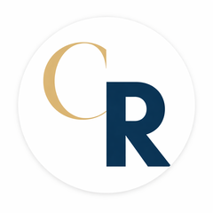

The trips paying more. The accounts opening up. And what every driver needs to know to keep them coming.
A Note From The Team
To our drivers,
Thank you for the work you put in. None of this happens without you behind the wheel.
We have wanted a space like this for a long time. A place where the office and the road come together. A monthly check-in where you hear from us and we hear from you.
Classic Ryde was built on the people behind the wheel. That was true on day one and it is still true today. Whether you are out every morning at 3:00 AM, on the road a few days a week, or thinking about coming back, this newsletter is for you.
If you have something to say, write back. Reply on this email goes to a real person. Pick up the phone any hour, dispatch picks up. The team gets better when you tell us what you see out there.
With pride,
Classic Ryde Management
276 Greenpoint Ave · Brooklyn, NY
Trip volume on Classic Ryde dispatch has climbed every month of 2026. The partner network is bigger than it was at the start of the year. That climb is the team showing up, shift after shift.
If you turned a wheel for us this quarter, you were part of it. If you have been away from the road, the work is still here, and the board is busier than it has been in months.
New Account, Live Now
Steady, repeatable work. Familiar pickups. Regular passengers.
In April, Classic Ryde became the preferred transportation provider for New Horizon Counseling Center. The network covers 14 facilities across the city, with daily pickups running on Classic Ryde dispatch.
The Work
Familiar pickups. Regular passengers. The kind of trips that fill out a shift, week after week.
Where It Is
Pickups are running daily across all 14 facilities, with trips coming in from neighborhoods around the city. Brooklyn and Far Rockaway are the busiest right now, but every borough has work on the board.
The Opening For You
If you have not been picking up these jobs lately, May is a good month to be active in those areas.
Dispatch is ready to put you back on these routes. Call 718-777-7800.
Headline News, Starting May
This is the news that should put gas in your tank.
Premium accounts like this come to Classic Ryde because of how our drivers handle the work.
Today Classic Ryde handles around 44% of New York Surgery Center's trip volume. Starting this May, that share grows. Over the next two months it climbs to 100%, and every NYSC ride will route to a Classic Ryde driver.
These are the kind of trips routing on Classic Ryde dispatch right now.
The Rate
These are not local fares. The average NYSC trip in Q1 cleared $73, and the rate climbs from there on the longer routes.
Long Routes That Pay
Trips paying around $280 from New Jersey to Queens. Others paying up to $630 on a single run. One trip like that covers most of a shift on its own.
More Volume On The Way
Moving from a 44% share to 100% means the volume of premium NYSC trips on offer is set to grow. More trips of this kind, more often, on Classic Ryde dispatch.
If you are a driver who has stepped away from the road in recent months, this is the kind of book of business that pays off being active again. Call dispatch at 718-777-7800. Get back on the schedule.
Protect Your License
Honest trips keep you working. Here is what every driver needs to know.
What We Owe Each Other
A word about something serious. Our industry is watched closely. State, City, and the partners who pay for these trips audit records every month. Most of what they check passes, because most drivers on this team already do this work straight. Even so, the standard has to hold on every shift, because one bad record can put a contract at risk and the next month of trips with it. Fraud in NEMT can take many forms: picking up the wrong passenger, billing for a trip that never happened, or filling out documents that do not match the actual work.
Pick up the right passenger. Verify the name on the dispatch.
Complete the trip as it was dispatched. No shortcuts on the documentation.
Be honest on every form. Every time.
If something does not feel right, call dispatch. We would rather hear it from you first.
Your TLC license is your livelihood. One bad audit can take it away. Clean records keep you on the road.
Your name on a clean trip is the reason you get the next one. Strong records keep you in the rotation.
Premium accounts only stay with us because their records hold up. When they hold up, you get more trips. Real trips. At good rates.
Compliance is what keeps premium accounts like New York Surgery Center choosing Classic Ryde over the next car service. One ghost trip can cost the partnership. We do not let one bad shift undo what this team has built.
The standard is honesty. The reward is sustainable income for everyone behind the wheel.
Questions? We are here 24/7.
718-777-7800Live dispatch, always a real person
English · Español · 中文 · Русский · বাংলা · Kreyòl · 한국어 · العربية · اردو · Français · ਪੰਜਾਬੀ
© 2026 Classic Car Service DBA Classic Ryde · All rights reserved
276 Greenpoint Ave, Brooklyn NY 11222 Suite 251 · drivers@classicryde.com
You are receiving this because you are a Classic Ryde driver.
Medicaid EnrolledTLC Licensed24/7 Dispatch
Los viajes que pagan mas. Las cuentas que se abren. Y lo que cada conductor necesita saber para que sigan llegando.
Una Nota Del Equipo
A nuestros conductores,
Gracias por el trabajo que ponen. Nada de esto sucede sin ustedes detras del volante.
Hemos querido un espacio como este por mucho tiempo. Un lugar donde la oficina y la calle se encuentran. Un punto de encuentro mensual donde ustedes nos escuchan y nosotros los escuchamos a ustedes.
Classic Ryde se construyo sobre las personas detras del volante. Asi fue desde el primer dia y asi es todavia hoy. Ya sea que esten en la calle a las 3:00 AM cada manana, en el camino unos dias por semana, o pensando en regresar, este boletin es para ustedes.
Si tienen algo que decir, respondan a este correo. Llega a una persona real. Llamen al despacho a cualquier hora, contestamos. El equipo mejora cuando ustedes nos cuentan lo que ven en la calle.
Con orgullo,
Classic Ryde Management
276 Greenpoint Ave · Brooklyn, NY
El volumen de viajes en el despacho de Classic Ryde ha subido todos los meses de 2026. Nuestra red de cuentas es mas grande de lo que era al comienzo del ano. Esa subida es el equipo presentandose, turno tras turno.
Si tomaron un volante con nosotros este trimestre, fueron parte de eso. Si han estado lejos de la calle, el trabajo sigue aqui, y el tablero esta mas ocupado de lo que ha estado en meses.
Nueva Cuenta, Activa Ahora
Trabajo estable y constante. Recogidas familiares. Pasajeros regulares.
En abril, Classic Ryde se convirtio en el proveedor de transporte preferido de New Horizon Counseling Center. La red cubre 14 instalaciones en la ciudad, con recogidas diarias corriendo en el despacho de Classic Ryde.
El Trabajo
Recogidas familiares. Pasajeros regulares. El tipo de viajes que llenan un turno, semana tras semana.
Donde Esta
Las recogidas corren a diario en las 14 instalaciones, con viajes llegando de barrios por toda la ciudad. Brooklyn y Far Rockaway son los mas ocupados ahora mismo, pero cada condado tiene trabajo en el tablero.
La Oportunidad Para Ti
Si no han estado tomando estos trabajos ultimamente, mayo es un buen mes para estar activos en esas zonas.
El despacho esta listo para volver a poner a los conductores en estas rutas. Llamen al 718-777-7800.
Noticia Principal, Empieza en Mayo
Esta es la noticia que debe ponerles gasolina en el tanque.
Las cuentas premium como esta llegan a Classic Ryde por como nuestros conductores manejan el trabajo.
Hoy Classic Ryde maneja alrededor del 44% del volumen de viajes de New York Surgery Center. Empezando este mayo, esa parte crece. En los proximos dos meses sube al 100%, y cada viaje de NYSC se enrutara a un conductor de Classic Ryde.
Estos son el tipo de viajes que estan corriendo en el despacho de Classic Ryde ahora mismo.
La Tarifa
Estos no son viajes locales. El viaje promedio de NYSC en Q1 paso los $73, y la tarifa sube desde ahi en los viajes mas largos.
Rutas Largas Que Pagan
Viajes pagando alrededor de $280 de New Jersey a Queens. Otros pagando hasta $630 en un solo viaje. Un viaje asi cubre la mayor parte de un turno por si solo.
Mas Volumen En Camino
Pasar de una participacion del 44% al 100% significa que el volumen de viajes premium de NYSC va a crecer. Mas viajes de este tipo, mas seguido, en el despacho de Classic Ryde.
Si eres conductor que se alejo de la calle en los ultimos meses, este es el tipo de cuenta que vale la pena estar activo otra vez. Llama al despacho al 718-777-7800. Vuelve al horario.
Protege Tu Licencia
Los viajes honestos te mantienen trabajando. Esto es lo que cada conductor necesita saber.
Lo Que Nos Debemos Unos a Otros
Una palabra sobre algo serio. Nuestra industria es vigilada de cerca. El Estado, la Ciudad, y los socios que pagan estos viajes auditan los registros cada mes. La mayoria de lo que revisan pasa, porque la mayoria de conductores en este equipo ya hacen este trabajo derecho. Aun asi, el estandar tiene que mantenerse en cada turno, porque un mal registro puede poner un contrato en riesgo y el siguiente mes de viajes con el. El fraude en NEMT toma muchas formas: recoger al pasajero equivocado, cobrar por un viaje que nunca paso, o llenar documentos que no coinciden con el trabajo real.
Recoge al pasajero correcto. Verifica el nombre en el despacho.
Completa el viaje como fue despachado. Sin atajos en la documentacion.
Se honesto en cada formulario. Todas las veces.
Si algo no se siente bien, llama al despacho. Preferimos escucharlo de ti primero.
Tu licencia TLC es tu sustento. Una mala auditoria te la puede quitar. Los registros limpios te mantienen en la calle.
Tu nombre en un viaje limpio es la razon por la que recibes el siguiente. Los registros fuertes te mantienen en la rotacion.
Las cuentas premium se quedan con nosotros porque sus registros aguantan. Cuando aguantan, tu recibes mas viajes. Viajes reales. A buenas tarifas.
El cumplimiento es lo que hace que cuentas premium como New York Surgery Center elijan Classic Ryde sobre el proximo servicio de carros. Un viaje fantasma puede costar la asociacion. No dejamos que un mal turno deshaga lo que este equipo ha construido.
El estandar es la honestidad. La recompensa es ingreso sostenible para cada uno detras del volante.
Preguntas? Estamos aqui 24/7.
718-777-7800Despacho en vivo, siempre una persona real
English · Español · 中文 · Русский · বাংলা · Kreyòl · 한국어 · العربية · اردو · Français · ਪੰਜਾਬੀ
© 2026 Classic Car Service DBA Classic Ryde · Todos los derechos reservados
276 Greenpoint Ave, Brooklyn NY 11222 Suite 251 · drivers@classicryde.com
Recibes este boletin porque eres conductor de Classic Ryde.
Medicaid InscritoLicencia TLCDespacho 24/7
更高收入的行程。新开放的客户。每位司机都该知道，怎样让这些机会持续到来。
团队的话
致我们的司机们：
谢谢您的付出。没有方向盘后的您，这一切都不会发生。
我们一直想要这样一个空间。一个让办公室和路面联结起来的地方。一个每月的相会，您听到我们的声音，我们也听到您的声音。
Classic Ryde 是因方向盘后的人们而成长起来的。第一天如此，今天依然如此。无论您每天凌晨 3:00 就上路，每周开几天车，或者正在考虑回归，这份通讯都是为您写的。
如果您有想说的，回复邮件，回信会到一位真实的同事。任何时候打调度电话，调度都会接听。当您把您在路上看到的告诉我们，团队就会变得更好。
致以敬意，
Classic Ryde Management
276 Greenpoint Ave · Brooklyn, NY
Classic Ryde 调度的行程量在 2026 年的每个月都在攀升。我们的合作客户网络比年初要大。这一上升来自团队每个班次的坚持。
如果您本季度握过我们的方向盘，您就是其中的一员。如果您已经离开路面一段时间，工作仍然在这里，调度板比几个月以来都更繁忙。
新客户，已上线
稳定持续的工作。熟悉的接送地点。常见的乘客。
四月，Classic Ryde 成为 New Horizon Counseling Center 的优选交通服务商。该网络覆盖城市内 14 个地点，每天的接送任务都在 Classic Ryde 调度上运行。
工作内容
熟悉的接送地点。常见的乘客。能填满一个班次的那种行程，每周都有。
在哪里
14 个地点每天都有接送任务，行程来自城市各个社区。布鲁克林和 Far Rockaway 现在最忙，但每个区都有工作可接。
您的机会
如果您最近没有接这类工作，五月是回到这些区域的好月份。
调度已经准备好把您重新安排到这些路线。请拨打 718-777-7800。
五月头条新闻
这是足以为您加满油箱的好消息。
像这样的优质客户选择 Classic Ryde，是因为我们的司机把工作做得到位。
今天 Classic Ryde 处理 New York Surgery Center 大约 44% 的行程量。从这个五月起，这个比例开始增长。在接下来的两个月内将攀升到 100%，每一笔 NYSC 行程都将分配给 Classic Ryde 的司机。
这就是当下正在 Classic Ryde 调度上运行的那种行程。
费率
这不是本地短程的价钱。Q1 的 NYSC 平均行程超过 $73，长途路线的费率从这里继续往上走。
高收入的长途
新泽西到 Queens 的行程在 $280 左右。其他单趟达到 $630。这样一趟单子，可以撑起一个班次的大部分。
更多业务量在路上
从 44% 升到 100% 意味着 NYSC 优质行程的供给会扩大。这种行程会更多、更频繁地出现在 Classic Ryde 调度上。
如果您是最近一段时间没怎么开车的司机，这正是值得回到路上的客户。请拨打 718-777-7800。回到日程上来。
保护您的执照
诚实的行程让您继续工作。每位司机都要知道这些。
我们彼此之间的承诺
说一件严肃的事。我们这一行受到密切监管。州、市，以及为这些行程付费的合作方，每个月都会审计记录。绝大多数被检查的内容都是合格的，因为这个团队中的绝大多数司机本来就是按规矩做事。但即便如此，每个班次都要守住这条底线，因为一笔不实记录就可能让一个合同陷入风险，连带下个月的工作也跟着失去。NEMT 行业的欺诈可以有很多形式：接错乘客、虚报从未发生过的行程，或填写与实际工作不符的文件。
接对乘客。核对调度上的姓名。
按调度完成行程，文件不要走捷径。
每张表都要诚实。每一次都要。
如果觉得哪里不对劲，请打调度电话。我们更愿意先从您这里听到。
您的 TLC 执照就是您的生计。一次糟糕的审计就可能让它消失。干净的记录让您留在路上。
您在干净行程上的名字就是下一笔工作的理由。良好的记录让您留在轮班里。
优质客户之所以留下来，是因为他们的记录经得起检查。当记录经得起检查，您就会得到更多的、真实的、价格不错的行程。
正是合规让 New York Surgery Center 这样的优质客户选择 Classic Ryde 而不是别家。一笔虚假行程可能让合作终止。我们不会让一个糟糕的班次抹掉这个团队所建立的一切。
标准是诚实。回报是给方向盘后每一位司机的可持续收入。
有问题？我们 24/7 都在。
718-777-7800实时调度，始终是真人服务
English · Español · 中文 · Русский · বাংলা · Kreyòl · 한국어 · العربية · اردو · Français · ਪੰਜਾਬੀ
© 2026 Classic Car Service DBA Classic Ryde · 版权所有
276 Greenpoint Ave, Brooklyn NY 11222 Suite 251 · drivers@classicryde.com
您收到此邮件是因为您是 Classic Ryde 的司机。
Medicaid 注册TLC 执照24/7 调度
Поездки, которые платят больше. Открывающиеся аккаунты. И всё, что нужно знать водителю, чтобы они продолжали идти.
Слово от команды
Дорогие водители,
Спасибо за вашу работу. Без вас за рулём ничего этого не было бы.
Мы давно хотели такое пространство. Место, где офис и дорога встречаются. Ежемесячная встреча, где вы слышите нас, а мы слышим вас.
Classic Ryde построен на людях за рулём. Так было в первый день, и так есть и сегодня. Выходите ли вы каждое утро в 3:00, ездите несколько дней в неделю или думаете о возвращении, этот бюллетень для вас.
Если есть что сказать, ответьте на письмо. Ответ попадает к живому человеку. Звоните диспетчеру в любой час, мы возьмём трубку. Команда становится лучше, когда вы рассказываете, что видите на дороге.
С уважением,
Classic Ryde Management
276 Greenpoint Ave · Brooklyn, NY
Объём поездок на диспетчере Classic Ryde рос каждый месяц 2026 года. Партнёрская сеть стала больше, чем в начале года. Этот рост, это команда, выходящая на смену за сменой.
Если в этом квартале вы держали для нас руль, вы были частью этого. Если вы давно не выходили, работа по-прежнему здесь, и доска заявок занята, как давно не была.
Новый аккаунт, в работе
Стабильная, повторяющаяся работа. Знакомые точки. Постоянные пассажиры.
В апреле Classic Ryde стал предпочтительным перевозчиком для New Horizon Counseling Center. Сеть охватывает 14 объектов по городу, ежедневные посадки идут через диспетчера Classic Ryde.
Работа
Знакомые посадки. Постоянные пассажиры. Поездки, которые наполняют смену, неделя за неделей.
Где это
Посадки идут ежедневно по всем 14 объектам, поездки приходят из районов по всему городу. Brooklyn и Far Rockaway сейчас самые загруженные, но в каждом районе есть работа на доске.
Возможность для вас
Если в последнее время вы не брали такие заявки, май, хороший месяц быть активным в этих районах.
Диспетчер готов вернуть вас на эти маршруты. Звоните 718-777-7800.
Главная новость, с мая
Это та новость, которая должна заправить вам бак.
Премиум-аккаунты выбирают Classic Ryde из-за того, как наши водители делают работу.
Сегодня Classic Ryde обрабатывает около 44% поездок New York Surgery Center. С этого мая эта доля растёт. За следующие два месяца она поднимется до 100%, и каждая поездка NYSC будет уходить водителю Classic Ryde.
Это те поездки, которые прямо сейчас идут через диспетчер Classic Ryde.
Тариф
Это не местные поездки. Средняя поездка NYSC в Q1 превышала $73, на длинных маршрутах ставка идёт выше.
Длинные маршруты, которые платят
Поездки около $280 из New Jersey в Queens. Другие до $630 за один рейс. Одна такая поездка покрывает большую часть смены.
Объём ещё впереди
Переход с 44% на 100% означает, что объём премиальных поездок NYSC будет расти. Больше таких поездок, чаще, на диспетчере Classic Ryde.
Если вы давно не были на дороге, это та работа, ради которой стоит вернуться. Звоните диспетчеру: 718-777-7800. Возвращайтесь в график.
Защитите свою лицензию
Честные поездки сохраняют вашу работу. Вот что нужно знать каждому водителю.
Что мы должны друг другу
Серьёзная тема. Наша индустрия под пристальным вниманием. Штат, Город и партнёры, которые платят за эти поездки, каждый месяц проверяют записи. Большинство проверок проходит, потому что большинство водителей этой команды и так делают работу честно. Но стандарт должен соблюдаться в каждой смене, потому что одна плохая запись может поставить контракт под угрозу, а вместе с ним и работу следующего месяца. Мошенничество в NEMT может принимать разные формы: подбор не того пассажира, оплата за поездку, которой не было, или заполнение документов, которые не соответствуют реальной работе.
Подбирайте правильного пассажира. Проверяйте имя в наряде.
Завершайте поездку как назначено. Без сокращений в документации.
Будьте честны на каждой форме. Каждый раз.
Если что-то не так, звоните диспетчеру. Лучше услышать это от вас первым.
Ваша лицензия TLC, это ваш заработок. Одна плохая проверка может её отнять. Чистые записи держат вас на дороге.
Ваше имя на чистой поездке, это причина, по которой вам дают следующую. Сильные записи держат вас в обойме.
Премиум-аккаунты остаются с нами, потому что их записи выдерживают проверку. Когда выдерживают, вы получаете больше поездок. Реальных. По хорошим ставкам.
Соблюдение правил, это то, что заставляет премиум-аккаунты вроде New York Surgery Center выбирать Classic Ryde. Одна фиктивная поездка может стоить партнёрства. Мы не позволяем одной плохой смене обнулить то, что построила эта команда.
Стандарт, это честность. Награда, это устойчивый доход для каждого за рулём.
Вопросы? Мы здесь 24/7.
718-777-7800Живой диспетчер, всегда живой человек
English · Español · 中文 · Русский · বাংলা · Kreyòl · 한국어 · العربية · اردو · Français · ਪੰਜਾਬੀ
© 2026 Classic Car Service DBA Classic Ryde · Все права защищены
276 Greenpoint Ave, Brooklyn NY 11222 Suite 251 · drivers@classicryde.com
Вы получаете это письмо как водитель Classic Ryde.
MedicaidЛицензия TLCДиспетчер 24/7
যে ট্রিপগুলো বেশি দেয়। যে অ্যাকাউন্টগুলো খুলছে। আর সেগুলো আসতে থাকার জন্য প্রতিটি চালকের যা জানা দরকার।
টিমের কথা
প্রিয় চালকগণ,
আপনাদের পরিশ্রমের জন্য ধন্যবাদ। স্টিয়ারিংয়ের পেছনে আপনারা না থাকলে এর কিছুই হতো না।
এই ধরনের একটি জায়গা আমরা অনেকদিন ধরে চাইছিলাম। অফিস আর রাস্তা যেখানে এক হয়। প্রতি মাসে একটি দেখা হবে, আপনারা আমাদের শুনবেন, আমরা আপনাদের শুনব।
Classic Ryde গড়ে উঠেছে স্টিয়ারিংয়ের পেছনের মানুষদের দিয়ে। প্রথম দিন এটাই সত্য ছিল, আজও এটাই সত্য। আপনি প্রতি ভোর 3:00 AM-এ রাস্তায় থাকুন, সপ্তাহে কয়েক দিন চালান, কিংবা ফিরে আসার কথা ভাবছেন, এই নিউজলেটার আপনার জন্য।
যদি কিছু বলার থাকে, রিপ্লাই দিন। উত্তর সরাসরি একজন বাস্তব মানুষের কাছে যায়। যেকোনো সময়ে ডিসপ্যাচকে কল করুন, আমরা ধরি। আপনারা যা রাস্তায় দেখছেন তা আমাদের জানালে দল ভালো হয়।
সম্মানের সাথে,
Classic Ryde Management
276 Greenpoint Ave · Brooklyn, NY
Classic Ryde ডিসপ্যাচে ট্রিপের পরিমাণ 2026 সালের প্রতিটি মাসে বেড়েছে। অংশীদারের নেটওয়ার্ক বছরের শুরু থেকে বড় হয়েছে। এই উত্থান, প্রতিটি শিফটে দল হাজির থাকার ফল।
এই ত্রৈমাসিকে যদি আপনি আমাদের জন্য চাকা ঘুরিয়ে থাকেন, আপনি এর অংশ। আপনি যদি রাস্তা থেকে দূরে থেকে থাকেন, কাজ এখনও আছে, আর বোর্ড মাসগুলোর তুলনায় বেশি ব্যস্ত।
নতুন অ্যাকাউন্ট, এখন সক্রিয়
স্থির, পুনরাবৃত্ত কাজ। পরিচিত পিকআপ। নিয়মিত যাত্রী।
এপ্রিলে Classic Ryde New Horizon Counseling Center-এর পছন্দের পরিবহন প্রদানকারী হয়। নেটওয়ার্কটি শহরের 14টি ফ্যাসিলিটি জুড়ে আছে, প্রতিদিনের পিকআপ Classic Ryde ডিসপ্যাচে চলছে।
কাজ
পরিচিত পিকআপ। নিয়মিত যাত্রী। সপ্তাহে সপ্তাহে শিফট পূরণ করার মতো ট্রিপ।
কোথায়
14টি ফ্যাসিলিটিতে প্রতিদিন পিকআপ চলছে, ট্রিপগুলো শহরের বিভিন্ন এলাকা থেকে আসছে। Brooklyn এবং Far Rockaway এই মুহূর্তে সবচেয়ে ব্যস্ত, তবে প্রতিটি বরোতে বোর্ডে কাজ আছে।
আপনার সুযোগ
আপনি যদি সম্প্রতি এই কাজগুলো না নিয়ে থাকেন, ওই এলাকায় সক্রিয় হওয়ার জন্য মে একটি ভালো মাস।
ডিসপ্যাচ আপনাকে এই রুটে ফিরিয়ে নিতে প্রস্তুত। কল করুন 718-777-7800।
মে থেকে শিরোনাম
এটাই সেই খবর যা আপনার ট্যাঙ্কে গ্যাস ভরে দেওয়া উচিত।
এই ধরনের প্রিমিয়াম অ্যাকাউন্ট Classic Ryde-এ আসে, কারণ আমাদের চালকরা কাজটা ভালো করে।
আজ Classic Ryde New York Surgery Center-এর প্রায় 44% ট্রিপ পরিচালনা করে। এই মে থেকে এই অংশ বাড়ছে। পরবর্তী দুই মাসে এটি 100%-এ পৌঁছাবে, প্রতিটি NYSC ট্রিপ একজন Classic Ryde চালকের কাছে যাবে।
এটিই এখন Classic Ryde ডিসপ্যাচে যাচ্ছে এমন ট্রিপের ধরন।
রেট
এগুলো স্থানীয় ভাড়া নয়। Q1-এ NYSC গড় ট্রিপ $73 পেরিয়েছে, লম্বা রুটে রেট আরও বাড়ে।
যে লম্বা রুটগুলো বেশি দেয়
New Jersey থেকে Queens-এ ট্রিপ প্রায় $280। অন্যগুলো একক ট্রিপে $630 পর্যন্ত দিচ্ছে। এমন একটি ট্রিপই শিফটের অধিকাংশ ঢেকে দেয়।
আরও ভলিউম আসছে
44% থেকে 100%-এ যাওয়া মানে NYSC প্রিমিয়াম ট্রিপের পরিমাণ বাড়বে। এই ধরনের ট্রিপ আরও বেশি, আরও ঘন ঘন, Classic Ryde ডিসপ্যাচে।
যদি আপনি সাম্প্রতিক মাসগুলোতে রাস্তা থেকে দূরে থেকে থাকেন, এটাই সেই কাজ যেটার জন্য সক্রিয় থাকা সার্থক। ডিসপ্যাচকে 718-777-7800-এ কল করুন। সময়সূচিতে ফিরে আসুন।
আপনার লাইসেন্স রক্ষা করুন
সৎ ট্রিপ আপনাকে কাজে রাখে। প্রতিটি চালকের যা জানা দরকার, এখানে।
আমরা একে অপরের কাছে যা ঋণী
এক গুরুতর কথা। আমাদের শিল্পের ওপর কড়া নজর। স্টেট, সিটি, এবং যারা এই ট্রিপের জন্য পেমেন্ট করে, প্রতি মাসে রেকর্ড অডিট করে। যা যাচাই হয় তার বেশিরভাগই উত্তীর্ণ হয়, কারণ এই দলের অধিকাংশ চালক ইতিমধ্যেই কাজটি সঠিকভাবে করেন। তবু প্রতিটি শিফটে মানদণ্ড ধরে রাখতেই হবে, কারণ একটি খারাপ রেকর্ড একটি কন্ট্রাক্টকে ঝুঁকিতে ফেলতে পারে এবং পরের মাসের কাজও সঙ্গে নিয়ে যেতে পারে। NEMT-এ জালিয়াতি অনেক রকম হতে পারে: ভুল যাত্রী তোলা, না হওয়া ট্রিপের বিল করা, বা প্রকৃত কাজের সঙ্গে না মিল রেখে নথিপত্র পূরণ করা।
সঠিক যাত্রী তুলুন। ডিসপ্যাচের নাম যাচাই করুন।
ডিসপ্যাচ অনুযায়ী ট্রিপ সম্পূর্ণ করুন। ডকুমেন্টেশনে শর্টকাট নয়।
প্রতিটি ফর্মে সৎ থাকুন। প্রতিবার।
কিছু ঠিক মনে না হলে, ডিসপ্যাচকে কল করুন। আমরা আগে আপনার কাছ থেকেই শুনতে চাই।
আপনার TLC লাইসেন্সই আপনার জীবিকা। একটি খারাপ অডিট তা কেড়ে নিতে পারে। পরিষ্কার রেকর্ড আপনাকে রাস্তায় রাখে।
একটি পরিষ্কার ট্রিপে আপনার নাম পরের ট্রিপ পাওয়ার কারণ। শক্ত রেকর্ড আপনাকে রোটেশনে রাখে।
প্রিমিয়াম অ্যাকাউন্ট আমাদের সঙ্গে থাকে, কারণ তাদের রেকর্ড টিকে থাকে। যখন টিকে থাকে, আপনি বেশি ট্রিপ পান। আসল ট্রিপ। ভালো রেটে।
অনুসরণই New York Surgery Center-এর মতো প্রিমিয়াম অ্যাকাউন্টকে অন্য কোম্পানির বদলে Classic Ryde বেছে নিতে রাখে। একটি ভুতুড়ে ট্রিপ অংশীদারিত্ব হারিয়ে দিতে পারে। আমরা একটি খারাপ শিফটকে এই দলের গড়ে তোলা সবকিছু নষ্ট করতে দিই না।
মানদণ্ডটা সততা। পুরস্কারটা স্টিয়ারিংয়ের পেছনে প্রত্যেকের জন্য টেকসই আয়।
প্রশ্ন? আমরা 24/7 আছি।
718-777-7800লাইভ ডিসপ্যাচ, সবসময় একজন বাস্তব মানুষ
English · Español · 中文 · Русский · বাংলা · Kreyòl · 한국어 · العربية · اردو · Français · ਪੰਜਾਬੀ
© 2026 Classic Car Service DBA Classic Ryde · সর্বস্বত্ব সংরক্ষিত
276 Greenpoint Ave, Brooklyn NY 11222 Suite 251 · drivers@classicryde.com
আপনি Classic Ryde চালক হিসেবে এটি পাচ্ছেন।
Medicaid নিবন্ধিতTLC লাইসেন্সধারী24/7 ডিসপ্যাচ
Vwayaj ki peye plis. Kont k ap louvri. Ak sa chak chofe bezwen konnen pou yo kontinye vini.
Yon Mo Soti Nan Ekip La
Pou tout chofe nou yo,
Mesi pou travay ou ap fe. Anyen nan sa pa ta egziste san ou dewye volan.
Nou te vle yon espas konsa depi lontan. Yon kote biwo ak wout la rankontre. Yon randevou mansyel kote ou tande nou epi nou tande ou.
Classic Ryde te bati sou moun ki dewye volan. Te konsa premye jou a, e konsa toujou jodi a. Si ou sou wout chak maten 3:00 AM, sou wout kek jou nan semen, oswa w ap panse retounen, bilten sa a se pou ou.
Si ou gen yon bagay pou di, reponn imel sa. Repons lan rive nan men yon vre moun. Rele dispach nenpot le, dispach pran kous la. Ekip la vin pi bon le ou di nou sa ou we deyo.
Avek fyete,
Classic Ryde Management
276 Greenpoint Ave · Brooklyn, NY
Volim vwayaj sou dispach Classic Ryde monte chak mwa nan 2026. Rezo patne nou pi gwo pase nan komansman ane a. Mont sa a, se ekip la k ap parey, chif aprè chif.
Si ou te vire yon volan pou nou trimes sa a, ou te yon pati nan li. Si ou te lwen wout la, travay la la toujou, e tablo a pi okipe pase li te ye nan plizye mwa.
Nouvo Kont, Aktif Kounye a
Travay regilye, repete. Pwen ranmasaj familye. Pasaje regilye.
Nan mwa avril, Classic Ryde te vin founisè transpotasyon prefere pou New Horizon Counseling Center. Rezo a kouvri 14 etablisman nan vil la, ak ranmasaj chak jou k ap kouri sou dispach Classic Ryde.
Travay La
Ranmasaj familye. Pasaje regilye. Kalite vwayaj ki ranpli yon chif, semen aprè semen.
Kote Li Ye
Ranmasaj ap kouri chak jou nan tout 14 etablisman yo, vwayaj soti nan katye atravè vil la. Brooklyn ak Far Rockaway pi okipe kounye a, men chak bouro gen travay sou tablo a.
Ouveti Pou Ou
Si ou pa pran travay sa yo dènyèman, mwa me se yon bon mwa pou aktif nan zòn sa yo.
Dispach pare pou remete ou sou wout sa yo. Rele 718-777-7800.
Tit Nouvel, Komanse Me
Sa a se nouvel ki ta dwe mete gaz nan tank ou.
Kont premium konsa vin nan Classic Ryde paske jan chofe nou yo manyen travay la.
Jodi a Classic Ryde manyen apeprè 44% nan volim vwayaj New York Surgery Center. Komanse mwa me sa, pati sa a ap grandi. Pandan de pwochen mwa li monte rive 100%, e chak vwayaj NYSC ap dirije bay yon chofe Classic Ryde.
Sa yo se kalite vwayaj k ap pase sou dispach Classic Ryde kounye a.
To a
Sa yo pa vwayaj lokal. Vwayaj NYSC mwayen nan Q1 te depase $73, e to a monte plis sou wout pi long.
Wout Long Ki Peye
Vwayaj nan apeprè $280 soti New Jersey al Queens. Lòt yo rive jiska $630 sou yon sèl kous. Yon vwayaj konsa kouvri laplipa nan yon chif pou kont li.
Plis Volim Sou Wout La
Pase de 44% rive 100% vle di volim vwayaj NYSC premium ap grandi. Plis vwayaj konsa, pi souvan, sou dispach Classic Ryde.
Si ou se yon chofe ki te lwen wout la dènye mwa yo, sa a se kalite biznis ki vo lapenn pou ou aktif ankò. Rele dispach nan 718-777-7800. Tounen sou orè a.
Pwoteje Lisans Ou
Vwayaj onèt kenbe ou nan travay. Men sa chak chofe bezwen konnen.
Sa Nou Dwe Younn Lòt
Yon mo sou yon bagay serye. Endistri nou an ap gade de prè. Eta a, Vil la, ak patnè ki peye pou vwayaj sa yo, odit dosye chak mwa. Laplipa nan sa yo verifye pase, paske laplipa chofe nan ekip sa a deja fè travay sa kòrèk. Malgre sa, estanda a dwe kenbe nan chak chif, paske yon move dosye ka mete yon kontra an risk e mwa pwochen travay yo ak li. Fwod nan NEMT ka pran plizyè fòm: ramase move pasaje, fakti pou yon vwayaj ki pa janm rive, oswa ranpli dokiman ki pa koresponn ak vrè travay la.
Ranmase bon pasaje. Verifye non sou dispach.
Konplete vwayaj kòm li te bay. Pa gen rakousi sou dokimantasyon.
Onèt sou chak fòm. Chak fwa.
Si yon bagay pa santi byen, rele dispach. Nou prefere tande sa de ou anvan.
Lisans TLC ou se mwayen lavi ou. Yon move odit ka pran l. Dosye pwop kenbe ou sou wout la.
Non ou sou yon vwayaj pwop se rezon ou jwenn pwochen an. Bon dosye kenbe ou nan rotasyon.
Kont premium rete avèk nou paske dosye yo kenbe. Lè yo kenbe, ou jwenn plis vwayaj. Vrè vwayaj. Nan bon to.
Konfòmite se sa ki kenbe kont premium tankou New York Surgery Center chwazi Classic Ryde sou pwochen sèvis machin nan. Yon vwayaj fantom ka koute patenarya a. Nou pa kite yon move chif defèt sa ekip sa a bati.
Estanda a se onètete. Rekonpans la se revni dirab pou tout moun dewye volan.
Kesyon? Nou la 24/7.
718-777-7800Dispach an dirèk, toujou yon vrè moun
English · Español · 中文 · Русский · বাংলা · Kreyòl · 한국어 · العربية · اردو · Français · ਪੰਜਾਬੀ
© 2026 Classic Car Service DBA Classic Ryde · Tout dwa rezève
276 Greenpoint Ave, Brooklyn NY 11222 Suite 251 · drivers@classicryde.com
W ap resevwa sa paske ou se yon chofe Classic Ryde.
Enskri MedicaidLisans TLCDispach 24/7
더 많이 지급하는 운행. 새로 열리는 계정. 그리고 그것들을 계속 받기 위해 모든 드라이버가 알아야 할 것.
팀에서 드리는 한마디
드라이버 여러분께,
여러분의 노고에 감사드립니다. 핸들 뒤의 여러분이 없다면 이 모든 일은 일어나지 않습니다.
이런 공간을 오랫동안 원했습니다. 사무실과 도로가 만나는 곳. 매달 한 번, 여러분이 우리의 이야기를 듣고, 우리도 여러분의 이야기를 듣는 자리.
Classic Ryde는 핸들 뒤의 사람들로 만들어졌습니다. 첫날에도 그랬고, 오늘도 그렇습니다. 매일 새벽 3시에 도로에 나가시든, 일주일에 며칠만 운행하시든, 다시 시작할까 고민 중이시든, 이 뉴스레터는 여러분을 위한 것입니다.
하실 말씀이 있으면, 회신해 주세요. 답장은 실제 사람에게 갑니다. 어느 시간이든 디스패치로 전화 주세요, 받습니다. 여러분이 도로에서 본 것을 알려주실 때 팀이 나아집니다.
감사를 담아,
Classic Ryde Management
276 Greenpoint Ave · Brooklyn, NY
Classic Ryde 디스패치의 운행량은 2026년 매달 늘어났습니다. 파트너 네트워크는 연초보다 커졌습니다. 이 상승은 매 교대마다 나서 주신 팀 덕분입니다.
이번 분기에 우리를 위해 핸들을 잡으셨다면, 그 일부이셨습니다. 도로에서 멀어져 계셨다면, 일감은 여전히 여기에 있고, 보드는 몇 달 만에 가장 분주합니다.
신규 계정, 운영 중
안정적이고 반복되는 일감. 익숙한 픽업. 단골 승객.
4월에 Classic Ryde가 New Horizon Counseling Center의 우선 운송 파트너가 되었습니다. 네트워크는 시 전역의 14곳을 포함하며, Classic Ryde 디스패치에서 매일 픽업이 진행되고 있습니다.
어떤 일감인가
익숙한 픽업. 단골 승객. 매주 한 교대를 채워주는 종류의 운행.
어디서 발생하는가
14곳 모두에서 매일 픽업이 진행되며, 시 전역 동네에서 운행이 들어옵니다. 지금은 Brooklyn과 Far Rockaway가 가장 분주하지만, 모든 보로에 보드 위에 일감이 있습니다.
당신을 위한 기회
최근 이런 일을 잘 안 받으셨다면, 5월은 그 지역에서 활발히 움직이기 좋은 달입니다.
디스패치는 여러분을 이 노선으로 다시 배치할 준비가 되어 있습니다. 718-777-7800으로 전화 주세요.
5월 시작 헤드라인
이건 여러분의 연료통을 채워줄 만한 소식입니다.
이런 프리미엄 계정은 우리 드라이버들이 일을 어떻게 처리하는지 때문에 Classic Ryde를 선택합니다.
오늘 Classic Ryde는 New York Surgery Center 운행량의 약 44%를 처리합니다. 이번 5월부터 그 비율이 커집니다. 다음 두 달 동안 100%로 올라가며, 모든 NYSC 운행은 Classic Ryde 드라이버에게 배정됩니다.
이런 종류의 운행이 지금 Classic Ryde 디스패치에 들어오고 있습니다.
요금
이건 동네 요금이 아닙니다. Q1의 NYSC 평균 운행은 $73를 넘었고, 장거리에서는 더 올라갑니다.
수익이 큰 장거리
New Jersey에서 Queens까지 약 $280의 운행. 다른 단일 운행은 $630까지 나옵니다. 이런 한 건이 한 교대의 대부분을 책임집니다.
물량은 더 늘어납니다
44%에서 100%로 가는 것은 NYSC 프리미엄 운행이 더 많아진다는 의미입니다. Classic Ryde 디스패치에서 이런 운행이 더 자주 보이게 됩니다.
최근 도로에서 멀어지셨던 드라이버라면, 이 일감은 다시 활동할 가치가 있는 종류입니다. 718-777-7800으로 디스패치에 전화 주세요. 일정에 다시 들어오세요.
당신의 면허를 지키세요
정직한 운행이 당신을 일하게 합니다. 모든 드라이버가 알아야 할 내용입니다.
우리가 서로에게 빚진 것
한 가지 진지한 이야기. 우리 업계는 면밀히 감시되고 있습니다. 주, 시, 그리고 운행료를 지급하는 파트너들은 매달 기록을 감사합니다. 검사되는 대부분은 통과합니다. 이 팀의 대다수 드라이버가 이미 일을 정직하게 하고 있기 때문입니다. 그래도 모든 교대마다 기준은 지켜져야 합니다. 한 건의 잘못된 기록이 한 계약을 위태롭게 만들고 다음 달의 일감까지 함께 잃게 할 수 있기 때문입니다. NEMT 사기는 여러 형태로 나타납니다. 잘못된 승객을 태우는 것, 발생하지 않은 운행에 대한 청구, 또는 실제 작업과 일치하지 않는 서류 작성.
올바른 승객을 태우세요. 디스패치의 이름을 확인하세요.
배정된 대로 운행을 완료하세요. 서류에서 지름길은 없습니다.
모든 양식에 정직하세요. 매번.
뭔가 이상하다 싶으면, 디스패치에 전화 주세요. 우리는 여러분에게서 먼저 듣는 쪽을 선호합니다.
TLC 면허는 당신의 생계입니다. 한 번의 잘못된 감사가 그것을 앗아갈 수 있습니다. 깨끗한 기록이 당신을 도로 위에 머물게 합니다.
깨끗한 운행에 적힌 당신의 이름이 다음 운행을 받는 이유입니다. 강한 기록이 당신을 로테이션 안에 둡니다.
프리미엄 계정은 그들의 기록이 견뎌내기 때문에 우리와 함께 머뭅니다. 견딜 때 더 많은 운행이 옵니다. 진짜 운행. 좋은 요율로.
준수가 New York Surgery Center 같은 프리미엄 계정이 다른 카서비스 대신 Classic Ryde를 선택하게 만드는 것입니다. 한 건의 가짜 운행이 파트너십을 잃게 할 수 있습니다. 우리는 한 번의 잘못된 교대가 이 팀이 쌓아온 모든 것을 무너뜨리도록 두지 않습니다.
기준은 정직. 보상은 핸들 뒤의 모두를 위한 지속 가능한 수입.
질문이 있으세요? 우리는 24/7 대기 중입니다.
718-777-7800실시간 디스패치, 항상 실제 사람
English · Español · 中文 · Русский · বাংলা · Kreyòl · 한국어 · العربية · اردو · Français · ਪੰਜਾਬੀ
© 2026 Classic Car Service DBA Classic Ryde · 모든 권리 보유
276 Greenpoint Ave, Brooklyn NY 11222 Suite 251 · drivers@classicryde.com
Classic Ryde 드라이버이시기 때문에 이 메일을 받고 계십니다.
Medicaid 등록TLC 면허24/7 디스패치
الرحلات التي تدفع أكثر. الحسابات التي تُفتح. وما يحتاج كل سائق أن يعرفه ليبقي ذلك يأتي.
كلمة من الفريق
إلى سائقينا الكرام،
شكراً على عملكم. لا شيء من هذا يحدث من دون وجودكم خلف عجلة القيادة.
كنا نريد مساحة كهذه منذ زمن. مكان يلتقي فيه المكتب والطريق. لقاء شهري تسمعون فيه منا ونسمع منكم.
بُنيت Classic Ryde على الناس خلف عجلة القيادة. كان ذلك صحيحاً في اليوم الأول، وما زال صحيحاً اليوم. سواء كنت على الطريق كل صباح في 3:00 فجراً، أو تقود بضعة أيام في الأسبوع، أو تفكر في العودة، هذه النشرة لكم.
إن كان لديك ما تقوله، فاكتبوا. الرد يصل إلى شخص حقيقي. اتصلوا بقسم الإرسال في أي ساعة، نحن نرد. الفريق يتحسن عندما تخبروننا بما ترون على الطريق.
بكل اعتزاز،
Classic Ryde Management
276 Greenpoint Ave · Brooklyn, NY
حجم الرحلات على نظام Classic Ryde في تصاعد كل شهر من 2026. شبكة الشركاء أكبر مما كانت عليه في بداية السنة. هذا التصاعد هو ثمرة الفريق الذي يحضر، وردية بعد وردية.
إذا قدتم لنا في هذا الربع، كنتم جزءاً من ذلك. إذا ابتعدتم عن الطريق فترة، فالعمل ما زال هنا، واللوحة أكثر انشغالاً مما كانت عليه منذ شهور.
حساب جديد، فعّال الآن
عمل ثابت ومتكرر. نقاط استلام مألوفة. ركاب منتظمون.
في أبريل أصبحت Classic Ryde المزود المفضل للنقل لـ New Horizon Counseling Center. الشبكة تغطي 14 منشأة في المدينة، مع رحلات يومية تعمل عبر إرسال Classic Ryde.
العمل
نقاط استلام مألوفة. ركاب منتظمون. نوع الرحلات التي تملأ وردية، أسبوعاً بعد أسبوع.
أين هو
الاستلامات تجري يومياً عبر كل المنشآت الـ 14، مع رحلات تأتي من أحياء حول المدينة. Brooklyn و Far Rockaway هي الأكثر انشغالاً الآن، لكن كل حي كبير له عمل على اللوحة.
الفرصة لك
إن لم تكن قد أخذت هذه المهام مؤخراً، فمايو شهر جيد لتكون نشطاً في تلك المناطق.
الإرسال جاهز لإعادتك إلى هذه المسارات. اتصل بـ 718-777-7800.
خبر العنوان، يبدأ في مايو
هذا هو الخبر الذي يجب أن يملأ خزانك بالوقود.
حسابات بهذا المستوى تأتي إلى Classic Ryde بسبب الطريقة التي يتعامل بها سائقونا مع العمل.
اليوم تتولى Classic Ryde نحو 44% من حجم رحلات New York Surgery Center. ابتداءً من هذا مايو، تنمو هذه الحصة. خلال الشهرين القادمين تصعد إلى 100%، وكل رحلة لـ NYSC ستوجَّه إلى سائق Classic Ryde.
هذه هي نوع الرحلات الجارية على إرسال Classic Ryde الآن.
الأجرة
هذه ليست أجور رحلات محلية. متوسط رحلة NYSC في Q1 تجاوز $73، والأجرة تصعد من هناك على المسارات الأطول.
مسارات طويلة تدفع
رحلات بحوالي $280 من New Jersey إلى Queens. ورحلات أخرى تصل إلى $630 في رحلة واحدة. رحلة من هذا النوع تغطي معظم وردية بمفردها.
حجم أكبر قادم
الانتقال من 44% إلى 100% يعني أن حجم الرحلات الفاخرة لـ NYSC سينمو. عدد أكبر من الرحلات من هذا النوع، وأكثر تكراراً، على إرسال Classic Ryde.
إن كنت سائقاً ابتعدت عن الطريق في الأشهر الماضية، فهذا هو نوع العمل الذي يستحق العودة. اتصل بقسم الإرسال على 718-777-7800. ارجع إلى الجدول.
احمِ رخصتك
الرحلات النزيهة تبقيك تعمل. هذا ما يحتاج كل سائق أن يعرفه.
ما ندينه لبعضنا البعض
كلمة عن أمر جاد. صناعتنا تخضع لمراقبة دقيقة. الولاية والمدينة والشركاء الذين يدفعون لهذه الرحلات يدققون السجلات شهرياً. الأغلب مما يدققون يجتاز، لأن أغلب السائقين في هذا الفريق يقومون بالعمل بنزاهة أصلاً. ومع ذلك، يجب أن يصمد المعيار في كل وردية، لأن سجلاً سيئاً واحداً قد يضع عقداً في خطر، ومعه عمل الشهر التالي. الاحتيال في NEMT يمكن أن يأخذ أشكالاً عديدة: أخذ راكب خطأ، فوترة رحلة لم تحدث، أو ملء وثائق لا تطابق العمل الفعلي.
خذ الراكب الصحيح. تحقق من الاسم في الإرسال.
أكمل الرحلة كما حُدِّدت. لا اختصارات في الوثائق.
كن نزيهاً في كل نموذج. كل مرة.
إن شعرت أن شيئاً ليس على ما يرام، اتصل بالإرسال. نفضل أن نسمع منك أولاً.
رخصة TLC هي مصدر رزقك. تدقيق سيء واحد قد يأخذها. السجلات النظيفة تبقيك على الطريق.
اسمك على رحلة نظيفة هو السبب وراء حصولك على الرحلة التالية. السجلات القوية تبقيك في الدوران.
الحسابات الفاخرة تبقى معنا لأن سجلاتها تصمد. عندما تصمد، تحصل على المزيد من الرحلات. رحلات حقيقية. بأسعار جيدة.
الالتزام هو ما يجعل الحسابات الفاخرة مثل New York Surgery Center تختار Classic Ryde بدلاً من خدمة السيارات التالية. رحلة وهمية واحدة قد تكلف الشراكة. لا نسمح لوردية سيئة واحدة أن تمحو ما بناه هذا الفريق.
المعيار هو النزاهة. المكافأة هي دخل مستدام لكل من يجلس خلف عجلة القيادة.
أسئلة؟ نحن هنا 24/7.
718-777-7800إرسال حي، دائماً شخص حقيقي
English · Español · 中文 · Русский · বাংলা · Kreyòl · 한국어 · العربية · اردو · Français · ਪੰਜਾਬੀ
© 2026 Classic Car Service DBA Classic Ryde · جميع الحقوق محفوظة
276 Greenpoint Ave, Brooklyn NY 11222 Suite 251 · drivers@classicryde.com
تستلم هذه الرسالة لأنك سائق في Classic Ryde.
مسجَّل في Medicaidترخيص TLCإرسال 24/7
زیادہ ادائیگی کرنے والی رائیڈز۔ کھلتے ہوئے اکاؤنٹس۔ اور وہ جو ہر ڈرائیور کو جاننا چاہیے تاکہ یہ آتا رہے۔
ٹیم کی طرف سے ایک پیغام
ہمارے ڈرائیورز کے نام،
آپ کی محنت کا شکریہ۔ گاڑی کے پیچھے آپ کے بغیر یہ سب کچھ نہیں ہوتا۔
ہم بہت عرصے سے اس قسم کی جگہ چاہتے تھے۔ ایک ایسی جگہ جہاں دفتر اور سڑک ملیں۔ ایک ماہانہ ملاقات جہاں آپ ہمیں سنیں اور ہم آپ کو سنیں۔
Classic Ryde اسٹیئرنگ کے پیچھے بیٹھے لوگوں سے بنا ہے۔ یہ پہلے دن سے سچ تھا اور آج بھی سچ ہے۔ چاہے آپ ہر صبح 3:00 AM سے سڑک پر ہوں، ہفتے میں چند دن گاڑی چلائیں، یا واپس آنے کے بارے میں سوچ رہے ہوں، یہ نیوز لیٹر آپ کے لیے ہے۔
اگر کہنا کچھ ہے، تو جواب لکھیں۔ جواب ایک حقیقی شخص کو پہنچتا ہے۔ کسی بھی وقت ڈسپیچ کو کال کریں، وہ اٹھاتا ہے۔ جب آپ ہمیں بتاتے ہیں کہ سڑک پر کیا دیکھا، تو ٹیم بہتر ہوتی ہے۔
فخر کے ساتھ،
Classic Ryde Management
276 Greenpoint Ave · Brooklyn, NY
Classic Ryde ڈسپیچ پر ٹرپ والیوم 2026 کے ہر مہینے بڑھا ہے۔ شراکت دار نیٹ ورک سال کے آغاز کے مقابلے میں بڑا ہے۔ یہ اضافہ ٹیم کے ہر شفٹ پر حاضر ہونے کا نتیجہ ہے۔
اگر آپ نے اس سہ ماہی میں ہمارے لیے گاڑی چلائی، تو آپ اس کا حصہ تھے۔ اگر آپ سڑک سے دور رہے ہیں، تو کام اب بھی یہاں ہے، اور بورڈ مہینوں سے زیادہ مصروف ہے۔
نیا اکاؤنٹ، اب فعال
مستحکم، بار بار آنے والا کام۔ مانوس پک اپ۔ مستقل مسافر۔
اپریل میں Classic Ryde New Horizon Counseling Center کا ترجیحی ٹرانسپورٹ فراہم کنندہ بنا۔ نیٹ ورک شہر بھر میں 14 سہولیات پر محیط ہے، روزانہ کے پک اپ Classic Ryde ڈسپیچ پر چل رہے ہیں۔
کام
مانوس پک اپ۔ مستقل مسافر۔ ایسی رائیڈز جو ہر ہفتے ایک شفٹ کو پُر کرتی ہیں۔
کہاں ہے
تمام 14 سہولیات پر روزانہ پک اپ ہو رہے ہیں، رائیڈز شہر کے مختلف محلوں سے آ رہی ہیں۔ Brooklyn اور Far Rockaway اس وقت سب سے مصروف ہیں، لیکن ہر بورو میں بورڈ پر کام ہے۔
آپ کے لیے موقع
اگر آپ نے حال ہی میں یہ کام نہیں لیا، تو ان علاقوں میں فعال رہنے کے لیے مئی اچھا مہینہ ہے۔
ڈسپیچ آپ کو ان روٹس پر واپس لانے کے لیے تیار ہے۔ 718-777-7800 پر کال کریں۔
مئی سے سرخی
یہ وہ خبر ہے جو آپ کے ٹینک میں پٹرول بھر دے۔
اس قسم کے پریمیم اکاؤنٹ Classic Ryde کو اس لیے چنتے ہیں کہ ہمارے ڈرائیور کام کیسے سنبھالتے ہیں۔
آج Classic Ryde New York Surgery Center کے ٹرپ والیوم کا تقریباً 44% سنبھالتی ہے۔ اس مئی سے یہ حصہ بڑھ رہا ہے۔ اگلے دو مہینوں میں یہ 100% تک پہنچ جائے گا، اور NYSC کی ہر رائیڈ Classic Ryde کے ڈرائیور کو جائے گی۔
اس قسم کی ٹرپس ابھی Classic Ryde ڈسپیچ پر چل رہی ہیں۔
ریٹ
یہ مقامی کرایے نہیں ہیں۔ Q1 میں اوسط NYSC ٹرپ $73 سے زیادہ تھا، اور لمبے روٹس پر ریٹ مزید بڑھتا ہے۔
لمبے روٹس جو ادا کرتے ہیں
New Jersey سے Queens کے لیے تقریباً $280 کی ٹرپس۔ دیگر ایک ٹرپ پر $630 تک۔ اس قسم کی ایک ٹرپ شفٹ کا بڑا حصہ خود ڈھانپ لیتی ہے۔
مزید حجم آ رہا ہے
44% سے 100% تک جانا یعنی پریمیم NYSC ٹرپس کا حجم بڑھے گا۔ اس قسم کی مزید ٹرپس، زیادہ بار، Classic Ryde ڈسپیچ پر۔
اگر آپ ایسے ڈرائیور ہیں جو حالیہ مہینوں میں سڑک سے دور رہے، تو یہ وہ کاروبار ہے جس کے لیے واپس فعال ہونا ادا کرتا ہے۔ ڈسپیچ کو 718-777-7800 پر کال کریں۔ شیڈول پر واپس آئیں۔
اپنا لائسنس بچائیں
ایماندار ٹرپس آپ کو کام پر رکھتی ہیں۔ ہر ڈرائیور کو یہ جاننا چاہیے۔
ہم ایک دوسرے کے کیا قرض دار ہیں
ایک سنجیدہ بات۔ ہماری انڈسٹری پر کڑی نظر ہے۔ ریاست، شہر اور وہ شراکت دار جو ان ٹرپس کے لیے ادائیگی کرتے ہیں، ہر مہینہ ریکارڈز کا آڈٹ کرتے ہیں۔ جو چیک ہوتا ہے، اس کا بیشتر حصہ پاس ہوتا ہے، کیونکہ اس ٹیم کے زیادہ تر ڈرائیور پہلے ہی یہ کام درست طریقے سے کرتے ہیں۔ پھر بھی، معیار ہر شفٹ میں قائم رہنا چاہیے، کیونکہ ایک خراب ریکارڈ ایک کنٹریکٹ کو خطرے میں ڈال سکتا ہے اور اس کے ساتھ اگلے مہینے کا کام بھی۔ NEMT میں دھوکہ دہی کئی شکلوں میں ہو سکتی ہے: غلط مسافر اٹھانا، ایسی ٹرپ کی بلنگ جو نہیں ہوئی، یا ایسی دستاویزات بھرنا جو اصل کام سے مطابقت نہ رکھتی ہوں۔
صحیح مسافر اٹھائیں۔ ڈسپیچ پر نام کی تصدیق کریں۔
ٹرپ کو ڈسپیچ کے مطابق مکمل کریں۔ دستاویزات میں شارٹ کٹ نہیں۔
ہر فارم پر ایماندار رہیں۔ ہر بار۔
اگر کچھ ٹھیک نہ لگے، ڈسپیچ کو کال کریں۔ ہم آپ سے پہلے سننا پسند کرتے ہیں۔
آپ کا TLC لائسنس آپ کا روزگار ہے۔ ایک خراب آڈٹ اسے چھین سکتا ہے۔ صاف ریکارڈ آپ کو سڑک پر رکھتا ہے۔
صاف ٹرپ پر آپ کا نام اگلی ٹرپ ملنے کی وجہ ہے۔ مضبوط ریکارڈ آپ کو روٹیشن میں رکھتا ہے۔
پریمیم اکاؤنٹس ہمارے ساتھ صرف اس لیے رہتے ہیں کہ ان کے ریکارڈ ٹھہرتے ہیں۔ جب وہ ٹھہرتے ہیں، تو آپ کو زیادہ ٹرپس ملتی ہیں۔ اصلی ٹرپس۔ اچھے ریٹس پر۔
تعمیلِ احکام ہی وہ چیز ہے جو New York Surgery Center جیسے پریمیم اکاؤنٹس کو اگلی کار سروس کے بجائے Classic Ryde چننے پر مجبور کرتی ہے۔ ایک گھوسٹ ٹرپ شراکت داری کو لے سکتی ہے۔ ہم ایک خراب شفٹ کو اس ٹیم کی محنت ضائع کرنے نہیں دیتے۔
معیار ایمانداری ہے۔ انعام پہیے کے پیچھے ہر ایک کے لیے پائیدار آمدنی ہے۔
سوالات؟ ہم 24/7 موجود ہیں۔
718-777-7800لائیو ڈسپیچ، ہمیشہ ایک حقیقی شخص
English · Español · 中文 · Русский · বাংলা · Kreyòl · 한국어 · العربية · اردو · Français · ਪੰਜਾਬੀ
© 2026 Classic Car Service DBA Classic Ryde · تمام حقوق محفوظ ہیں
276 Greenpoint Ave, Brooklyn NY 11222 Suite 251 · drivers@classicryde.com
آپ یہ Classic Ryde ڈرائیور ہونے کی حیثیت سے وصول کر رہے ہیں۔
Medicaid میں رجسٹرڈTLC لائسنس24/7 ڈسپیچ
Les courses qui paient plus. Les comptes qui s ouvrent. Et ce que chaque chauffeur doit savoir pour qu elles continuent d arriver.
Un Mot De L Equipe
A nos chauffeurs,
Merci pour le travail que vous y mettez. Rien de tout cela n arrive sans vous derriere le volant.
Nous voulions un espace comme celui ci depuis longtemps. Un endroit ou le bureau et la route se rencontrent. Un rendez vous mensuel ou vous nous entendez et nous vous entendons.
Classic Ryde s est construit sur les personnes derriere le volant. C etait vrai au premier jour, c est encore vrai aujourd hui. Que vous soyez sur la route chaque matin a 3:00 AM, sur la route quelques jours par semaine, ou que vous pensiez a revenir, ce bulletin est pour vous.
Si vous avez quelque chose a dire, repondez. Le retour arrive a une vraie personne. Appelez la regulation a toute heure, on decroche. L equipe s ameliore quand vous nous racontez ce que vous voyez sur la route.
Avec fierte,
Classic Ryde Management
276 Greenpoint Ave · Brooklyn, NY
Le volume de courses sur la regulation Classic Ryde a grimpe chaque mois de 2026. Le reseau de partenaires est plus grand qu en debut d annee. Cette montee, c est l equipe qui se presente, service apres service.
Si vous avez tenu un volant pour nous ce trimestre, vous en faisiez partie. Si vous etes reste loin de la route, le travail est toujours la, et le tableau est plus charge qu il ne l a ete depuis des mois.
Nouveau Compte, Actif Maintenant
Travail stable et repete. Lieux de prise en charge familiers. Passagers reguliers.
En avril, Classic Ryde est devenu le prestataire de transport prefere de New Horizon Counseling Center. Le reseau couvre 14 sites dans la ville, avec des prises en charge quotidiennes qui passent par la regulation Classic Ryde.
Le Travail
Lieux familiers. Passagers reguliers. Le genre de courses qui remplissent un service, semaine apres semaine.
Ou Cela Se Passe
Les prises en charge tournent quotidiennement sur les 14 sites, avec des courses qui arrivent de quartiers de toute la ville. Brooklyn et Far Rockaway sont les plus charges en ce moment, mais chaque borough a du travail au tableau.
L Ouverture Pour Vous
Si vous n avez pas pris ces courses recemment, mai est un bon mois pour etre actif dans ces zones.
La regulation est prete a vous remettre sur ces itineraires. Appelez le 718-777-7800.
A La Une, Demarre En Mai
Voici la nouvelle qui devrait remplir votre reservoir.
Les comptes premium comme celui ci viennent chez Classic Ryde a cause de la maniere dont nos chauffeurs s occupent du travail.
Aujourd hui Classic Ryde gere environ 44% du volume de courses de New York Surgery Center. A partir de ce mois de mai, cette part grandit. Sur les deux prochains mois, elle monte a 100%, et chaque course NYSC sera dirigee vers un chauffeur Classic Ryde.
Voici le genre de courses qui passent sur la regulation Classic Ryde en ce moment.
Le Tarif
Ce ne sont pas des tarifs locaux. La course NYSC moyenne en Q1 a depasse $73, et le tarif monte sur les itineraires plus longs.
Itineraires Longs Qui Paient
Des courses autour de $280 du New Jersey a Queens. D autres jusqu a $630 sur une seule course. Une course comme celle la couvre la majeure partie d un service.
Plus De Volume A Venir
Passer de 44% a 100% signifie que le volume de courses NYSC premium va grandir. Plus de courses de ce type, plus souvent, sur la regulation Classic Ryde.
Si vous etes un chauffeur qui s est eloigne de la route ces derniers mois, c est le genre d activite qui vaut la peine d etre actif a nouveau. Appelez la regulation au 718-777-7800. Reprenez votre planning.
Protegez Votre Licence
Des courses honnetes vous gardent au travail. Voici ce que chaque chauffeur doit savoir.
Ce Que Nous Nous Devons
Un mot sur quelque chose de serieux. Notre secteur est etroitement surveille. L Etat, la Ville et les partenaires qui paient pour ces courses auditent les dossiers chaque mois. La plupart de ce qu ils verifient passe, parce que la plupart des chauffeurs de cette equipe font deja ce travail correctement. Et pourtant, le standard doit tenir a chaque service, parce qu un seul mauvais dossier peut mettre un contrat en peril, et avec lui le travail du mois suivant. La fraude dans le NEMT peut prendre plusieurs formes: prendre le mauvais passager, facturer une course qui n a jamais eu lieu, ou remplir des documents qui ne correspondent pas au travail reel.
Prenez le bon passager. Verifiez le nom sur la regulation.
Completez la course telle qu elle a ete attribuee. Pas de raccourcis dans la documentation.
Soyez honnete sur chaque formulaire. Chaque fois.
Si quelque chose ne va pas, appelez la regulation. Nous preferons l entendre de vous d abord.
Votre licence TLC, c est votre gagne pain. Un mauvais audit peut vous l enlever. Des dossiers propres vous gardent sur la route.
Votre nom sur une course propre est la raison pour laquelle vous obtenez la prochaine. Des dossiers solides vous gardent dans la rotation.
Les comptes premium restent avec nous parce que leurs dossiers tiennent. Quand ils tiennent, vous obtenez plus de courses. De vraies courses. A de bons tarifs.
La conformite, c est ce qui pousse des comptes premium comme New York Surgery Center a choisir Classic Ryde plutot que le service de voitures suivant. Une course fantome peut couter le partenariat. Nous ne laissons pas un mauvais service defaire ce que cette equipe a construit.
Le standard, c est l honnetete. La recompense, c est un revenu durable pour tous derriere le volant.
Questions? Nous sommes la 24/7.
718-777-7800Regulation en direct, toujours une vraie personne
English · Español · 中文 · Русский · বাংলা · Kreyòl · 한국어 · العربية · اردو · Français · ਪੰਜਾਬੀ
© 2026 Classic Car Service DBA Classic Ryde · Tous droits reserves
276 Greenpoint Ave, Brooklyn NY 11222 Suite 251 · drivers@classicryde.com
Vous recevez ceci en tant que chauffeur Classic Ryde.
Inscrit MedicaidLicence TLCRegulation 24/7
ਉਹ ਟ੍ਰਿਪ ਜੋ ਜ਼ਿਆਦਾ ਅਦਾ ਕਰਦੀਆਂ ਹਨ। ਉਹ ਖਾਤੇ ਜੋ ਖੁੱਲ੍ਹ ਰਹੇ ਹਨ। ਅਤੇ ਉਹ ਸਭ ਜੋ ਹਰ ਡਰਾਈਵਰ ਨੂੰ ਜਾਣਨਾ ਚਾਹੀਦਾ ਹੈ ਤਾਂ ਜੋ ਇਹ ਆਉਂਦਾ ਰਹੇ।
ਟੀਮ ਵੱਲੋਂ ਇੱਕ ਸੁਨੇਹਾ
ਸਾਡੇ ਡਰਾਈਵਰਾਂ ਨੂੰ,
ਤੁਹਾਡੀ ਮਿਹਨਤ ਲਈ ਧੰਨਵਾਦ। ਸਟੀਅਰਿੰਗ ਦੇ ਪਿੱਛੇ ਤੁਹਾਡੇ ਬਿਨਾਂ ਇਹ ਕੁਝ ਨਹੀਂ ਹੁੰਦਾ।
ਅਸੀਂ ਅਜਿਹਾ ਜਗ੍ਹਾ ਲੰਬੇ ਸਮੇਂ ਤੋਂ ਚਾਹੁੰਦੇ ਸੀ। ਜਿੱਥੇ ਦਫ਼ਤਰ ਅਤੇ ਸੜਕ ਮਿਲਦੇ ਹਨ। ਮਹੀਨਾਵਾਰ ਮੁਲਾਕਾਤ ਜਿੱਥੇ ਤੁਸੀਂ ਸਾਨੂੰ ਸੁਣਦੇ ਹੋ ਅਤੇ ਅਸੀਂ ਤੁਹਾਨੂੰ ਸੁਣਦੇ ਹਾਂ।
Classic Ryde ਸਟੀਅਰਿੰਗ ਦੇ ਪਿੱਛੇ ਬੈਠੇ ਲੋਕਾਂ ਨਾਲ ਬਣਿਆ ਹੈ। ਪਹਿਲੇ ਦਿਨ ਇਹ ਸੱਚ ਸੀ ਅਤੇ ਅੱਜ ਵੀ ਸੱਚ ਹੈ। ਚਾਹੇ ਤੁਸੀਂ ਹਰ ਸਵੇਰ 3:00 AM ਨੂੰ ਸੜਕ ਉੱਤੇ ਹੋਵੋ, ਹਫ਼ਤੇ ਵਿੱਚ ਕੁਝ ਦਿਨ ਚਲਾਉਂਦੇ ਹੋਵੋ, ਜਾਂ ਵਾਪਸ ਆਉਣ ਬਾਰੇ ਸੋਚ ਰਹੇ ਹੋਵੋ, ਇਹ ਨਿਊਜ਼ਲੈਟਰ ਤੁਹਾਡੇ ਲਈ ਹੈ।
ਜੇ ਕੁਝ ਕਹਿਣਾ ਹੈ, ਤਾਂ ਜਵਾਬ ਦਿਓ। ਜਵਾਬ ਅਸਲੀ ਵਿਅਕਤੀ ਕੋਲ ਪਹੁੰਚਦਾ ਹੈ। ਕਿਸੇ ਵੀ ਸਮੇਂ ਡਿਸਪੈਚ ਨੂੰ ਕਾਲ ਕਰੋ, ਉਹ ਚੁੱਕਦਾ ਹੈ। ਤੁਸੀਂ ਜੋ ਸੜਕ ਉੱਤੇ ਵੇਖਦੇ ਹੋ ਜਦੋਂ ਸਾਨੂੰ ਦੱਸਦੇ ਹੋ, ਟੀਮ ਬਿਹਤਰ ਹੁੰਦੀ ਹੈ।
ਮਾਣ ਨਾਲ,
Classic Ryde Management
276 Greenpoint Ave · Brooklyn, NY
Classic Ryde ਡਿਸਪੈਚ ਉੱਤੇ ਟ੍ਰਿਪ ਵਾਲਿਊਮ 2026 ਦੇ ਹਰ ਮਹੀਨੇ ਵਧਿਆ ਹੈ। ਪਾਰਟਨਰ ਨੈੱਟਵਰਕ ਸਾਲ ਦੇ ਸ਼ੁਰੂ ਨਾਲੋਂ ਵੱਡਾ ਹੈ। ਇਹ ਚੜ੍ਹਾਈ ਟੀਮ ਦੇ ਹਰ ਸ਼ਿਫਟ ਉੱਤੇ ਹਾਜ਼ਰ ਹੋਣ ਦਾ ਸਿੱਟਾ ਹੈ।
ਜੇ ਤੁਸੀਂ ਇਸ ਤਿਮਾਹੀ ਵਿੱਚ ਸਾਡੇ ਲਈ ਇੱਕ ਪਹੀਆ ਵੀ ਘੁਮਾਇਆ, ਤੁਸੀਂ ਇਸ ਦਾ ਹਿੱਸਾ ਸੀ। ਜੇ ਤੁਸੀਂ ਸੜਕ ਤੋਂ ਦੂਰ ਰਹੇ ਹੋ, ਕੰਮ ਅੱਜੇ ਵੀ ਇੱਥੇ ਹੈ, ਅਤੇ ਬੋਰਡ ਮਹੀਨਿਆਂ ਤੋਂ ਜ਼ਿਆਦਾ ਰੁੱਝਿਆ ਹੋਇਆ ਹੈ।
ਨਵਾਂ ਖਾਤਾ, ਹੁਣ ਚੱਲ ਰਿਹਾ
ਸਥਿਰ, ਦੁਹਰਾਉਣ ਵਾਲਾ ਕੰਮ। ਜਾਣੀ-ਪਛਾਣੀ ਚੁੱਕ। ਨਿਯਮਿਤ ਸਵਾਰ।
ਅਪ੍ਰੈਲ ਵਿੱਚ Classic Ryde New Horizon Counseling Center ਲਈ ਪਸੰਦੀਦਾ ਟਰਾਂਸਪੋਰਟ ਪ੍ਰਦਾਤਾ ਬਣ ਗਿਆ। ਨੈੱਟਵਰਕ ਸ਼ਹਿਰ ਭਰ ਵਿੱਚ 14 ਸੁਵਿਧਾਵਾਂ ਨੂੰ ਕਵਰ ਕਰਦਾ ਹੈ, ਰੋਜ਼ਾਨਾ ਚੁੱਕਾਂ Classic Ryde ਡਿਸਪੈਚ ਉੱਤੇ ਚੱਲ ਰਹੀਆਂ ਹਨ।
ਕੰਮ
ਜਾਣੀ-ਪਛਾਣੀ ਚੁੱਕ। ਨਿਯਮਿਤ ਸਵਾਰ। ਉਹ ਟ੍ਰਿਪ ਜੋ ਹਫ਼ਤੇ-ਹਫ਼ਤੇ ਇੱਕ ਸ਼ਿਫਟ ਨੂੰ ਭਰ ਦਿੰਦੀਆਂ ਹਨ।
ਕਿੱਥੇ ਹੈ
ਸਾਰੀਆਂ 14 ਸੁਵਿਧਾਵਾਂ ਉੱਤੇ ਰੋਜ਼ਾਨਾ ਚੁੱਕਾਂ ਚੱਲ ਰਹੀਆਂ ਹਨ, ਟ੍ਰਿਪਾਂ ਸ਼ਹਿਰ ਦੇ ਵੱਖ-ਵੱਖ ਮੁਹੱਲਿਆਂ ਤੋਂ ਆ ਰਹੀਆਂ ਹਨ। Brooklyn ਅਤੇ Far Rockaway ਇਸ ਵੇਲੇ ਸਭ ਤੋਂ ਰੁੱਝੇ ਹੋਏ ਹਨ, ਪਰ ਹਰ ਬੋਰੋ ਵਿੱਚ ਬੋਰਡ ਉੱਤੇ ਕੰਮ ਹੈ।
ਤੁਹਾਡੇ ਲਈ ਮੌਕਾ
ਜੇ ਤੁਸੀਂ ਹਾਲ ਹੀ ਵਿੱਚ ਇਹ ਕੰਮ ਨਹੀਂ ਲਏ, ਤਾਂ ਇਨ੍ਹਾਂ ਖੇਤਰਾਂ ਵਿੱਚ ਸਰਗਰਮ ਰਹਿਣ ਲਈ ਮਈ ਚੰਗਾ ਮਹੀਨਾ ਹੈ।
ਡਿਸਪੈਚ ਤੁਹਾਨੂੰ ਇਨ੍ਹਾਂ ਰੂਟਾਂ ਉੱਤੇ ਵਾਪਸ ਪਾਉਣ ਲਈ ਤਿਆਰ ਹੈ। 718-777-7800 ਉੱਤੇ ਕਾਲ ਕਰੋ।
ਮਈ ਤੋਂ ਸੁਰਖੀ
ਇਹ ਉਹ ਖ਼ਬਰ ਹੈ ਜਿਸ ਨਾਲ ਤੁਹਾਡੀ ਟੈਂਕੀ ਭਰੀ ਜਾਣੀ ਚਾਹੀਦੀ ਹੈ।
ਇਸ ਪੱਧਰ ਦੇ ਪ੍ਰੀਮੀਅਮ ਖਾਤੇ Classic Ryde ਨੂੰ ਚੁਣਦੇ ਹਨ ਕਿਉਂਕਿ ਸਾਡੇ ਡਰਾਈਵਰ ਕੰਮ ਨੂੰ ਸਾਂਭਦੇ ਹਨ।
ਅੱਜ Classic Ryde New York Surgery Center ਦੇ ਟ੍ਰਿਪ ਵਾਲਿਊਮ ਦਾ ਲਗਭਗ 44% ਸਾਂਭਦਾ ਹੈ। ਇਸ ਮਈ ਤੋਂ ਇਹ ਹਿੱਸਾ ਵਧ ਰਿਹਾ ਹੈ। ਅਗਲੇ ਦੋ ਮਹੀਨਿਆਂ ਵਿੱਚ ਇਹ 100% ਤੇ ਪਹੁੰਚ ਜਾਵੇਗਾ, ਅਤੇ ਹਰ NYSC ਟ੍ਰਿਪ Classic Ryde ਡਰਾਈਵਰ ਨੂੰ ਜਾਵੇਗੀ।
ਇਸ ਕਿਸਮ ਦੀਆਂ ਟ੍ਰਿਪਾਂ ਹੁਣ Classic Ryde ਡਿਸਪੈਚ ਉੱਤੇ ਚੱਲ ਰਹੀਆਂ ਹਨ।
ਰੇਟ
ਇਹ ਸਥਾਨਕ ਕਿਰਾਏ ਨਹੀਂ ਹਨ। Q1 ਵਿੱਚ ਔਸਤ NYSC ਟ੍ਰਿਪ $73 ਤੋਂ ਉੱਪਰ ਸੀ, ਅਤੇ ਲੰਬੇ ਰੂਟ ਉੱਤੇ ਰੇਟ ਹੋਰ ਚੜ੍ਹਦਾ ਹੈ।
ਲੰਬੇ ਰੂਟ ਜੋ ਅਦਾ ਕਰਦੇ ਹਨ
New Jersey ਤੋਂ Queens ਲਈ ਲਗਭਗ $280 ਦੀਆਂ ਟ੍ਰਿਪਾਂ। ਇੱਕ ਟ੍ਰਿਪ ਵਿੱਚ $630 ਤੱਕ ਵੀ। ਇਸ ਤਰ੍ਹਾਂ ਦੀ ਇੱਕ ਟ੍ਰਿਪ ਆਪਣੇ ਆਪ ਇੱਕ ਸ਼ਿਫਟ ਦਾ ਜ਼ਿਆਦਾਤਰ ਹਿੱਸਾ ਪੂਰਾ ਕਰ ਦਿੰਦੀ ਹੈ।
ਹੋਰ ਵਾਲਿਊਮ ਆ ਰਿਹਾ ਹੈ
44% ਤੋਂ 100% ਤੱਕ ਜਾਣ ਦਾ ਮਤਲਬ ਹੈ ਕਿ ਪ੍ਰੀਮੀਅਮ NYSC ਟ੍ਰਿਪਾਂ ਦੀ ਗਿਣਤੀ ਵਧੇਗੀ। ਇਸ ਕਿਸਮ ਦੀਆਂ ਹੋਰ ਟ੍ਰਿਪਾਂ, ਜ਼ਿਆਦਾ ਵਾਰ, Classic Ryde ਡਿਸਪੈਚ ਉੱਤੇ।
ਜੇ ਤੁਸੀਂ ਉਹ ਡਰਾਈਵਰ ਹੋ ਜੋ ਪਿਛਲੇ ਮਹੀਨਿਆਂ ਵਿੱਚ ਸੜਕ ਤੋਂ ਦੂਰ ਰਿਹਾ, ਇਹ ਉਹ ਕੰਮ ਹੈ ਜਿਸ ਲਈ ਮੁੜ ਸਰਗਰਮ ਹੋਣਾ ਫ਼ਾਇਦੇਮੰਦ ਹੈ। ਡਿਸਪੈਚ ਨੂੰ 718-777-7800 ਉੱਤੇ ਕਾਲ ਕਰੋ। ਸ਼ਡਿਊਲ ਉੱਤੇ ਵਾਪਸ ਆਓ।
ਆਪਣੀ ਲਾਇਸੈਂਸ ਬਚਾਓ
ਈਮਾਨਦਾਰ ਟ੍ਰਿਪਾਂ ਤੁਹਾਨੂੰ ਕੰਮ ਉੱਤੇ ਰੱਖਦੀਆਂ ਹਨ। ਹਰ ਡਰਾਈਵਰ ਨੂੰ ਇਹ ਜਾਣਨਾ ਚਾਹੀਦਾ ਹੈ।
ਅਸੀਂ ਇੱਕ ਦੂਜੇ ਦੇ ਕਰਜ਼ਦਾਰ
ਇੱਕ ਗੰਭੀਰ ਗੱਲ। ਸਾਡੀ ਇੰਡਸਟਰੀ ਦੀ ਨੇੜੇ ਤੋਂ ਨਿਗਰਾਨੀ ਹੁੰਦੀ ਹੈ। ਸਟੇਟ, ਸਿਟੀ ਅਤੇ ਉਹ ਪਾਰਟਨਰ ਜੋ ਇਹਨਾਂ ਟ੍ਰਿਪਾਂ ਲਈ ਅਦਾਇਗੀ ਕਰਦੇ ਹਨ, ਹਰ ਮਹੀਨੇ ਰਿਕਾਰਡਾਂ ਦੀ ਜਾਂਚ ਕਰਦੇ ਹਨ। ਜੋ ਜਾਂਚ ਹੁੰਦੀ ਹੈ, ਉਸ ਦਾ ਜ਼ਿਆਦਾਤਰ ਪਾਸ ਹੁੰਦਾ ਹੈ, ਕਿਉਂਕਿ ਇਸ ਟੀਮ ਦੇ ਬਹੁਤੇ ਡਰਾਈਵਰ ਪਹਿਲਾਂ ਹੀ ਇਹ ਕੰਮ ਠੀਕ ਕਰਦੇ ਹਨ। ਫਿਰ ਵੀ, ਮਿਆਰ ਹਰ ਸ਼ਿਫਟ ਉੱਤੇ ਕਾਇਮ ਰਹਿਣਾ ਚਾਹੀਦਾ ਹੈ, ਕਿਉਂਕਿ ਇੱਕ ਮਾੜਾ ਰਿਕਾਰਡ ਇੱਕ ਠੇਕੇ ਨੂੰ ਖ਼ਤਰੇ ਵਿੱਚ ਪਾ ਸਕਦਾ ਹੈ ਅਤੇ ਨਾਲ ਅਗਲੇ ਮਹੀਨੇ ਦਾ ਕੰਮ ਵੀ। NEMT ਵਿੱਚ ਧੋਖਾਧੜੀ ਕਈ ਰੂਪ ਲੈ ਸਕਦੀ ਹੈ: ਗ਼ਲਤ ਯਾਤਰੀ ਚੁੱਕਣਾ, ਉਸ ਟ੍ਰਿਪ ਦੀ ਬਿਲਿੰਗ ਜੋ ਨਹੀਂ ਹੋਈ, ਜਾਂ ਉਹ ਦਸਤਾਵੇਜ਼ ਭਰਨਾ ਜੋ ਅਸਲ ਕੰਮ ਨਾਲ ਮੇਲ ਨਹੀਂ ਖਾਂਦੇ।
ਸਹੀ ਯਾਤਰੀ ਚੁੱਕੋ। ਡਿਸਪੈਚ ਉੱਤੇ ਨਾਮ ਚੈੱਕ ਕਰੋ।
ਟ੍ਰਿਪ ਨੂੰ ਡਿਸਪੈਚ ਅਨੁਸਾਰ ਪੂਰਾ ਕਰੋ। ਦਸਤਾਵੇਜ਼ਾਂ ਵਿੱਚ ਕੋਈ ਸ਼ਾਰਟਕਟ ਨਹੀਂ।
ਹਰ ਫਾਰਮ ਉੱਤੇ ਈਮਾਨਦਾਰ ਰਹੋ। ਹਰ ਵਾਰ।
ਜੇ ਕੁਝ ਠੀਕ ਨਾ ਲੱਗੇ, ਡਿਸਪੈਚ ਨੂੰ ਕਾਲ ਕਰੋ। ਅਸੀਂ ਪਹਿਲਾਂ ਤੁਹਾਡੇ ਤੋਂ ਸੁਣਨਾ ਪਸੰਦ ਕਰਦੇ ਹਾਂ।
ਤੁਹਾਡਾ TLC ਲਾਇਸੈਂਸ ਤੁਹਾਡੀ ਰੋਜ਼ੀ ਹੈ। ਇੱਕ ਮਾੜਾ ਆਡਿਟ ਇਸਨੂੰ ਖੋਹ ਸਕਦਾ ਹੈ। ਸਾਫ਼ ਰਿਕਾਰਡ ਤੁਹਾਨੂੰ ਸੜਕ ਉੱਤੇ ਰੱਖਦੇ ਹਨ।
ਸਾਫ਼ ਟ੍ਰਿਪ ਉੱਤੇ ਤੁਹਾਡਾ ਨਾਮ ਅਗਲੀ ਟ੍ਰਿਪ ਮਿਲਣ ਦਾ ਕਾਰਨ ਹੈ। ਮਜ਼ਬੂਤ ਰਿਕਾਰਡ ਤੁਹਾਨੂੰ ਰੋਟੇਸ਼ਨ ਵਿੱਚ ਰੱਖਦੇ ਹਨ।
ਪ੍ਰੀਮੀਅਮ ਖਾਤੇ ਸਾਡੇ ਨਾਲ ਉਦੋਂ ਹੀ ਰਹਿੰਦੇ ਹਨ ਜਦੋਂ ਉਹਨਾਂ ਦੇ ਰਿਕਾਰਡ ਠਹਿਰਦੇ ਹਨ। ਜਦੋਂ ਠਹਿਰਦੇ ਹਨ, ਤੁਹਾਨੂੰ ਵੱਧ ਟ੍ਰਿਪਾਂ ਮਿਲਦੀਆਂ ਹਨ। ਅਸਲੀ ਟ੍ਰਿਪਾਂ। ਚੰਗੇ ਰੇਟ ਉੱਤੇ।
ਅਨੁਪਾਲਨ ਹੀ ਉਹ ਚੀਜ਼ ਹੈ ਜੋ New York Surgery Center ਵਰਗੇ ਪ੍ਰੀਮੀਅਮ ਖਾਤੇ Classic Ryde ਨੂੰ ਅਗਲੀ ਕਾਰ ਸਰਵਿਸ ਦੀ ਥਾਂ ਚੁਣਨ ਲਈ ਮਜਬੂਰ ਕਰਦੀ ਹੈ। ਇੱਕ ਫਰਜ਼ੀ ਟ੍ਰਿਪ ਇਸ ਸਾਂਝ ਨੂੰ ਖ਼ਰਾਬ ਕਰ ਸਕਦੀ ਹੈ। ਅਸੀਂ ਇੱਕ ਮਾੜੀ ਸ਼ਿਫਟ ਨੂੰ ਇਸ ਟੀਮ ਦੀ ਮਿਹਨਤ ਖ਼ਰਾਬ ਕਰਨ ਨਹੀਂ ਦਿੰਦੇ।
ਮਿਆਰ ਈਮਾਨਦਾਰੀ ਹੈ। ਇਨਾਮ ਪਹੀਏ ਦੇ ਪਿੱਛੇ ਹਰ ਇੱਕ ਲਈ ਟਿਕਾਊ ਆਮਦਨ ਹੈ।
ਸਵਾਲ? ਅਸੀਂ 24/7 ਉਪਲਬਧ ਹਾਂ।
718-777-7800ਲਾਈਵ ਡਿਸਪੈਚ, ਹਮੇਸ਼ਾ ਇੱਕ ਅਸਲ ਵਿਆਕਤੀ
English · Español · 中文 · Русский · বাংলা · Kreyòl · 한국어 · العربية · اردو · Français · ਪੰਜਾਬੀ
© 2026 Classic Car Service DBA Classic Ryde · ਸਾਰੇ ਅਧਿਕਾਰ ਰਾਖਵੇਂ ਹਨ
276 Greenpoint Ave, Brooklyn NY 11222 Suite 251 · drivers@classicryde.com
ਤੁਸੀਂ ਇਹ Classic Ryde ਡਰਾਈਵਰ ਵਜੋਂ ਪ੍ਰਾਪਤ ਕਰ ਰਹੇ ਹੋ।
Medicaid ਦਰਜTLC ਲਾਇਸੈਂਸ24/7 ਡਿਸਪੈਚ